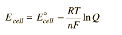

Standard Electrode PotentialsIn an electrochemical cell, an electric potential is created between two dissimilar metals. This potential is a measure of the energy per unit charge which is available from the oxidation/reduction reactions to drive the reaction. It is customary to visualize the cell reaction in terms of two half-reactions, an oxidation half-reaction and a reduction half-reaction.
The cell potential (often called the electromotive force or emf) has a contribution from the anode which is a measure of its ability to lose electrons - it will be called its "oxidation potential". The cathode has a contribution based on its ability to gain electeons, its "reduction potential". The cell potential can then be written Ecell = oxidation potential + reduction potential If we could tabulate the oxidation and reduction potentials of all available electrodes, then we could predict the cell potentials of voltaic cells created from any pair of electrodes. Actually, tabulating one or the other is sufficient, since the oxidation potential of a half-reaction is the negative of the reduction potential for the reverse of that reaction. Two main hurdles must be overcome to establish such a tabulation
In practice, the first of these hurdles is overcome by measuring the potentials with respect to a standard hydrogen electrode. It is the nature of electric potential that the zero of potential is arbitrary; it is the difference in potential which has practical consequence. Tabulating all electrode potentials with respect to the same standard electrode provides a practical working framework for a wide range of calculations and predictions. The standard hydrogen electrode is assigned a potential of zero volts. The second hurdle is overcome by choosing standard thermodynamic conditions for the measurement of the potentials. The standard electrode potentials are customarily determined at solute concentrations of 1 Molar, gas pressures of 1 atmosphere, and a standard temperature which is usually 25°C. The standard cell potential is denoted by a degree sign as a superscript.
The example below shows some of the extreme values for standard cell potentials.
The values for the table entries are reduction potentials, so lithium at the top of the list has the most negative number, indicating that it is the strongest reducing agent. The strongest oxidizing agent is fluorine with the largest positive number for standard electrode potential. The link below takes you to a more extensive table.
Useful applications of the standard electrode potentials include the following. |
Index Oxidation/ Reduction concepts Electrochemistry concepts Reference Hill & Kolb Ch 8 Ebbing Ch 19 | ||||||||||||||||||||||||||||||||
|
Go Back |
Calculation of Voltaic Cell PotentialsWhen an electrochemical cell is arranged with the two half-reactions separated but connected by an electrically conducting path, a voltaic cell is created. The maximum voltage which can be produced between the poles of the cell is determined by the standard electrode potentials under the standard conditions under which those potentials are defined. Consider the historic Daniell cell in which zinc and copper were used as electrodes. The data from the table of standard electrode potentials is
The cell potential can be written Ecell = oxidation potential + reduction potential Since the tabulated standard electrode potentials are reduction potentials, the one which is most negative will need to be reversed in sign to get its oxidation potential. When that is done, it is clear that the theoretical standard cell potential for the zinc-copper cell is 1.10 volts. In general, a real voltaic cell will differ from the standard conditions, so we need to be able to adjust the calculated cell potential to account for the differences. This can be done with the application of the Nernst equation.  By numerically exploring the above calculation, you can confirm that large concentration differences between the anions and the cations can cause the voltage to differ significantly from the standard cell potential, and that such large concentration differences also make the cell potential more temperature dependent. |
Index Oxidation/ Reduction concepts Electrochemistry concepts Reference Hill & Kolb Ch 8 Ebbing Ch 19 | ||||||
|
Go Back |
The Nernst EquationThe cell potential for a voltaic cell under standard conditions can be calculated from the standard electrode potentials. But real voltaic cells will typically differ from the standard conditions. The Nernst equation relates the cell potential to its standard cell potential.
The quantity Q, the thermodynamic reaction constant, is like a dynamic version of the equilibrium constant in which the concentrations and gas pressures are the instantaneous values in the reaction mixture. For a reaction the reaction quotient has the form where [C] is understood to be the molar concentration of product C, or the partial pressure in atmospheres if it is a gas. Applied to the Daniell cell where zinc and copper form the electrodes, the reaction is Zn(s) + Cu2+(aq) <-> Zn2+(aq) + Cu(s) the form of Q is since the concentrations of the pure metal solids are assigned the value 1. This implies that the departure of the cell potential from its standard value of 1.10 volts will be influenced by the temperature and the ion concentrations.
|
Index Oxidation/ Reduction concepts Electrochemistry concepts Reference Hill & Kolb Ch 8 Ebbing Ch 19 | |||||||
|
Go Back |
Background for the Nernst EquationThe Nernst equation allows us to predict the cell potential for voltaic cells under conditions other than standard conditions of 1M, 1 atmosphere, 25°C. The effects of different temperatures and concentrations may be tracked in terms of the Gibbs free energy change ΔG. This free energy change depends upon the temperature and concentrations according to where ΔG° is the free energy change under standard conditions and Q is the thermodynamic reaction quotient. The free energy change is related to the cell potential Ecell by or which is called the Nernst equation. |
Index Oxidation/ Reduction concepts Electrochemistry concepts Reference Hill & Kolb Ch 8 Ebbing Ch 19 | ||
|
Go Back |